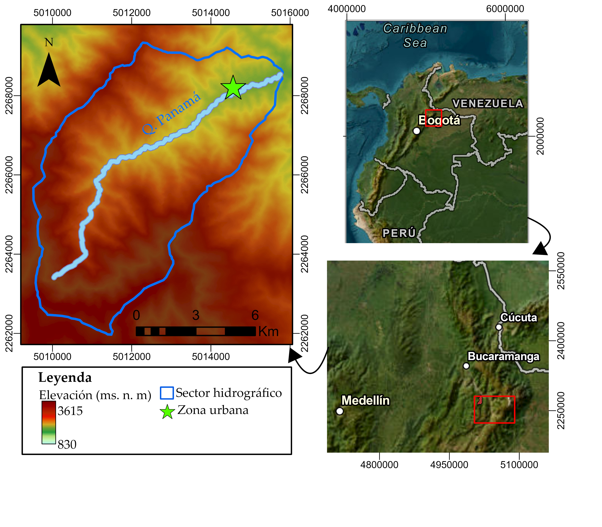
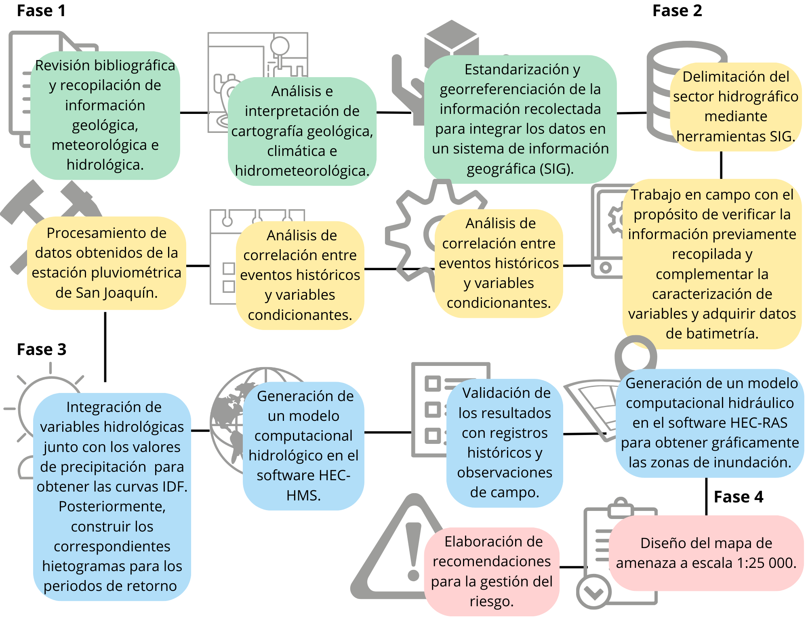
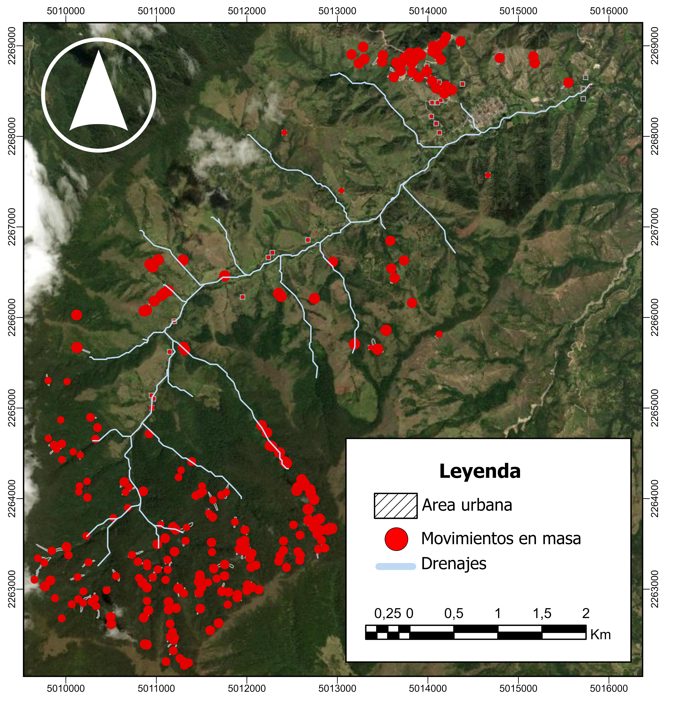
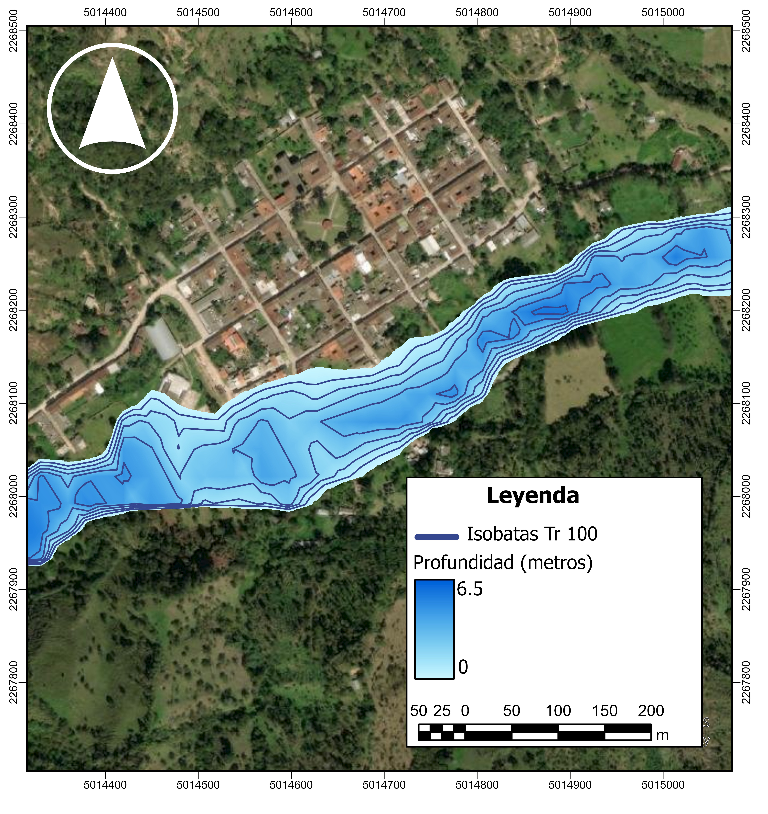
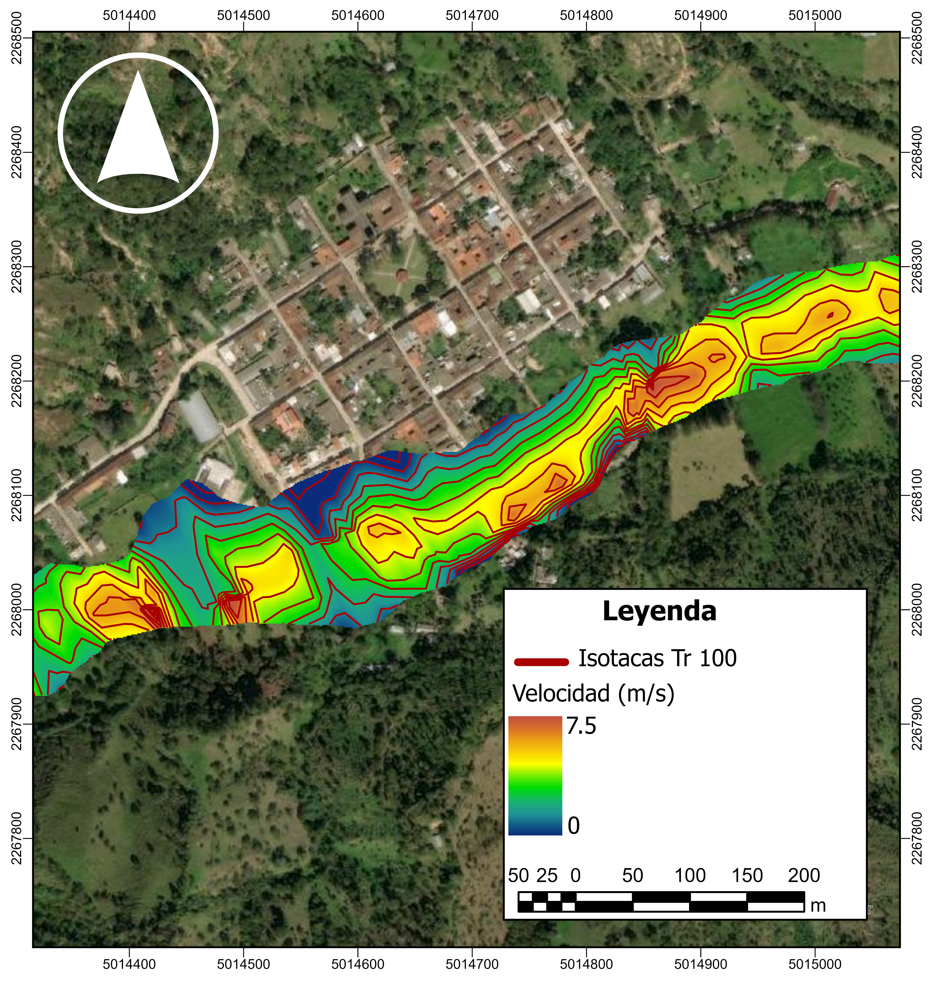
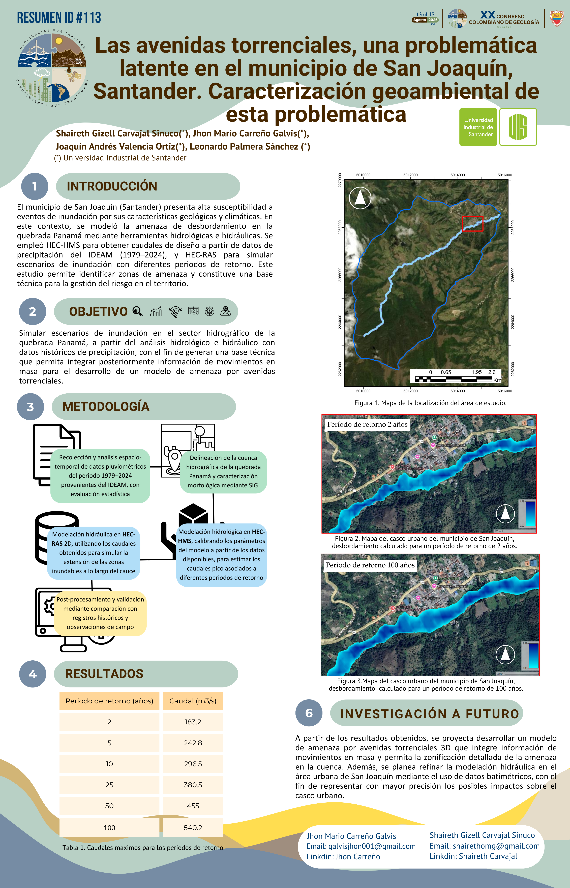
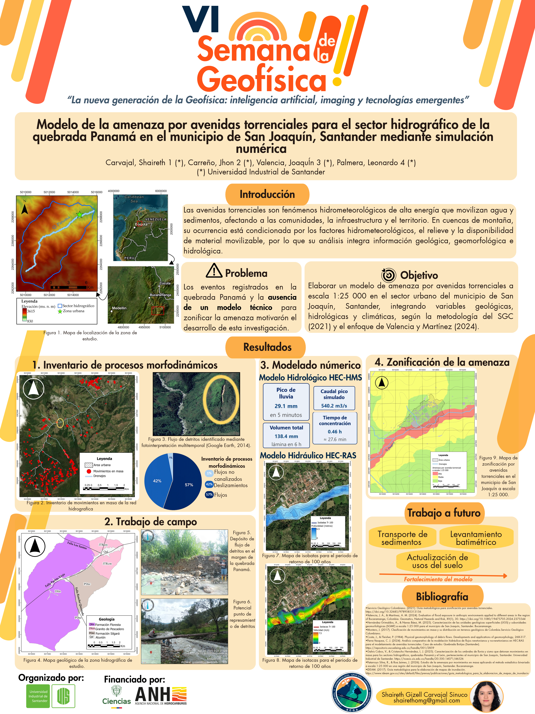

Investigación · Amenazas geológicas · Modelación numérica
Modelo de amenaza por avenidas torrenciales en la quebrada Panamá
Proyecto de investigación desarrollado en el marco de un estudio interdisciplinario en el municipio de San Joaquín, Santander, que abordó diferentes problemáticas geológicas y ambientales mediante proyectos de grado en áreas como geoeducación, movimientos en masa, avenidas torrenciales, geomorfología, usos del suelo y análisis morfométrico. Como parte del trabajo, también se realizaron actividades de apropiación del conocimiento y geoeducación con la comunidad, incluyendo habitantes de las veredas y estudiantes del colegio del municipio.
Autores
Área de estudio

Metodología

Resultados
272
Movimientos en masa inventariados
46 años
Registro de precipitación analizado
540,2 m³/s
Caudal pico para Tr = 100 años
0,51 km²
Área total de inundación para Tr = 100 años




Zonificación de la amenaza
Distribución de las categorías de amenaza sobre un área urbana de 0,18 km².
Alta · 25 %
Media · 35 %
Baja · 40 %
Productos de divulgación

Congreso Geológico Colombiano
Presentación de resultados de investigación

XVI Semana de la Geofísica
Presentación de resultados de investigación
Documento completo
Consulta la metodología, los datos, los resultados y las conclusiones de la investigación.